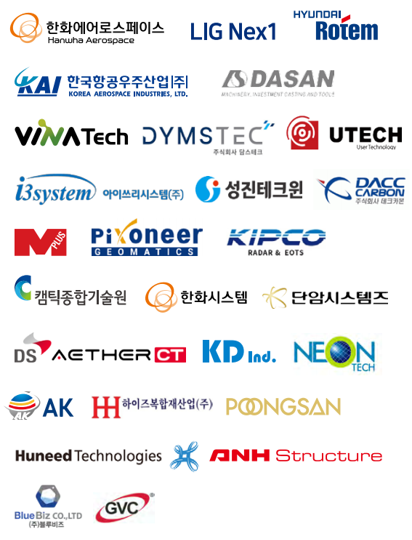

Industry Partners
방산기업 및 연구기관 협력 네트워크
주요 방산기업, 기술기업, 연구기관과의 산학협력 기반을 바탕으로 실무교육과 공동연구 연계를 확대합니다.
Network
방산기업 및 연구기관 협력 네트워크
한화에어로스페이스, LIG넥스원, 현대로템, KAI 등 주요 방산기업 및 기술기업·연구기관과 연계한 현장 중심 협력 체계를 구축합니다.

한화에어로스페이스, LIG넥스원, 현대로템, KAI, 다산기공, 비나텍, 딤스텍, 유텍, 아이쓰리시스템, 성진테크윈, 카본헥사, 피오니어제네틱스, KIPCO, 캠틱종합기술원, 한화시스템, 단암시스템즈, DS AETHER CT, KD Ind., 네온테크, 풍산, 휴니드테크놀러지스, ANH Structure, Blue Biz, GVC 등과 협력 네트워크를 이어갑니다.